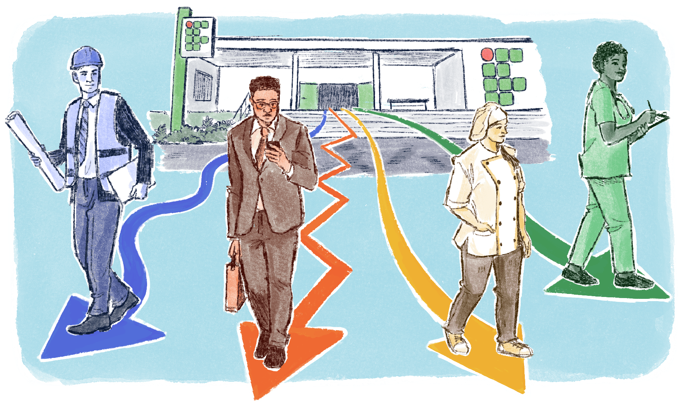

O desafio da articulação: etapas e modalidades da educação
No Brasil, um dos maiores desafios para a implementação da EPT é o de articular as diferentes etapas e modalidades da educação nacional. Esse esforço é essencial para garantir a formação contínua e integral dos estudantes, preparando-os para o mundo do trabalho e para o exercício pleno da cidadania. A pluralidade do público atendido pelas instituições de EPT exige uma abordagem cuidadosa e inovadora que considere tanto as demandas específicas de cada modalidade quanto as características dos estudantes.
É preciso que cada um dos estudantes, em qualquer que seja seu momento de vida, encontre significado no curso que está fazendo, enxergando que por meio daquele curso haverá melhoria em sua vida, e que a trajetória de estudos e aprendizagens seja viável e gere êxito.

Título: Trajetórias dos Estudantes
Fonte: Prosa (2025a).
Para acompanhar outros percursos desses estudantes, sugerimos este relato:
Depoimentos de ex-alunos da Escola Politécnica de Saúde Joaquim Venâncio.
Conforme Gerson Carmo, Heise Arêas e Rozana Souza (2017), a gestão para a permanência é uma construção coletiva, que requer a articulação de políticas públicas, práticas pedagógicas e engajamento comunitário. O sucesso dessa gestão está em considerar a diversidade das trajetórias dos estudantes e garantir que o espaço escolar seja um lugar de pertencimento e acolhimento. Para conferir um pouco mais do protagonismo estudantil, sugerimos a leitura da reportagem sobre Grêmios Estudantis: a atuação do corpo discente nas causas acadêmicas.
A articulação das instituições de EPT com a Educação Básica, a Educação Superior, a Educação de Jovens e Adultos (EJA), a Educação Especial e com a Educação a Distância (EaD) é necessária para que sua proposta seja atingida. Cada rede apresenta um desafio específico, dada a diversidade das condições socioeconômicas e culturais das populações atendidas. Tamanha diversidade exige que os projetos político-pedagógicos sejam elaborados com foco na inclusão e no alinhamento entre os objetivos institucionais e as demandas da sociedade.
Cada modalidade de ensino exige uma atenção específica. A EJA, por exemplo, atende a um público heterogêneo, com histórias de vida marcadas por desafios que, muitas vezes, incluem a exclusão do sistema educacional formal. Isto é, a EJA é uma modalidade de educação direcionada a jovens e adultos que não concluíram os anos escolares no que se considera idade regular.
Dessa forma, cabem alguns questionamentos em relação a essa não conclusão e, sobretudo, quanto ao retorno às instituições de ensino e ao modo como essas instituições podem fomentar processos de exclusão ou de permanência dos estudantes – nesse sentido, é interessante identificar quem são eles. Pesquisas recentes, como as de Regina Araújo e Rosa Coutrim (2022) e de Renata Ribeiro e Baraquizio do Nascimento Junior (2015), apontam que o estereótipo de adultos mais velhos e idosos tem mudado, e os estudantes que acessam a EJA vêm sendo, majoritariamente, adultos jovens, com menos de 30 anos.
Destes, alguns ainda moram com os pais e a maioria já está inserida no mercado de trabalho, ganhando salários baixos, o que é identificado como fator de retorno à educação: reconhecer na EJA uma oportunidade de recomeçar e, a partir disso, buscar melhorias nas condições socioeconômicas. As causas mais comuns de evasão na EJA atualmente, em território nacional, foram elencadas por um estudo desenvolvido por Lucilene Félix (2021):
- fatores socioeconômicos;
- fatores socioemocionais;
- carga horária exaustiva nas atividades laborais;
- remuneração baixa e muitos gastos para se manter estudando;
- cansaço relacionado a jornadas duplas, triplas ou quádruplas em alguns casos;
- falta de transporte para ir ao local das aulas e distanciamento das escolas;
- currículos e práticas pedagógicas inadequadas à modalidade; e
- organização escolar inflexível com horários e práticas transpostas do ensino regular.
Para enfrentá-las, é necessário adotar práticas pedagógicas adaptadas à realidade desses estudantes, construir ambientes e propostas curriculares que fortaleçam sua integração ao ambiente escolar, trazendo significados reais para suas vidas.
É importante, também, instrumentalizar os estudantes para uma real inserção no mundo do trabalho, buscando conhecer os saberes acumulados por eles e tê-los como elementos preciosos em seu processo formativo e na contribuição para a ampliação das perspectivas escolares e cidadãs. Trata-se de conceber a escola a partir do princípio da inclusão, que precisa partir da perspectiva da diversidade essencialmente.
De maneira similar, a Educação Especial requer ajustes pedagógicos e estruturais que garantam a participação plena de estudantes com deficiência na EPT. Há uma demanda por adaptações estruturais fundamentais, mas, sobretudo, pela elaboração de currículos e instrumentos pedagógicos que explorem todas as potencialidades dos sujeitos.
Almeja-se, com isto, o amadurecimento da ideia de inclusão nas relações institucionais, superando preconceitos e promovendo a troca entre professores, estudantes e comunidade em geral, além de promover a inclusão e o aprendizado mútuo. Nesse sentido, é fundamental a formação continuada de gestores e educadores para garantir a inclusão na diversidade. Confira a proposta de curso do Instituto Federal do Rio Grande do Norte:
Título: Formação Continuada
Fonte: Silva (2022).
Elaboração: Prosa (2025b).
A EaD, por sua vez, também desempenha um papel relevante na ampliação do acesso à EPT, especialmente no alcance de pessoas geograficamente afastadas das instituições de ensino ou com restrições de tempo ou de espaço que não permitem o acesso.
Vale ressaltar alguns desafios que são particulares dessa modalidade. Liane Nakada e Rodrigo Urban (2022) apontaram, em seu trabalho intitulado "Educação a Distância no Brasil: potencialidades, fragilidades e contribuições para a educação profissional e tecnológica", a partir de um levantamento de dados do CensoEaD.Br (ABED), que a discussão da evasão é fundamental na EaD. Os autores destacam que, devido à falta de tempo para dedicar-se ao curso e à falta de adaptação às metodologias de ensino, muitos estudantes acabam desistindo da formação.
Nesse sentido, além de garantir a qualidade do ensino, também deve ser priorizada a inclusão digital, a partir da manutenção de um contato próximo com esses estudantes, apesar da distância física. Isso amplia as chances de que eles acessem e permaneçam nos cursos. Para superar esse desafio, é necessário investimentos em tecnologia e em capacitação de professores e tutores, além de políticas de suporte aos estudantes.
A articulação entre as modalidades e as etapas da educação não pode ignorar a diversidade do público atendido pela EPT. A valorização dessa diversidade deve permear todas as ações pedagógicas e administrativas, garantindo que a educação profissional e tecnológica seja, de fato, um espaço de inclusão, de formação cidadã e de desenvolvimento humano.
Além disso, o planejamento da oferta de cursos deve contemplar a integração das dimensões do trabalho, ciência e tecnologia com o contexto socioeconômico e cultural de cada região, garantindo uma formação mais significativa e alinhada às realidades vividas pelos estudantes.
Para garantir que os alunos da EPT tenham uma formação integrada e contínua, a gestão educacional deve atentar-se ao planejamento do currículo, às práticas pedagógicas e à avaliação, de forma que todos esses componentes estejam alinhados com as diferentes etapas e modalidades da educação nacional.